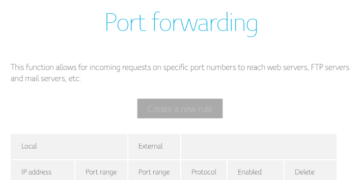

Hallo,
ich versuche einen Rechner bei mir im Büro als Server fürs Internet als Server sichtbar zu machen. Leider ist die Schaltfläche "create a new rule" in den Port forwarding Optionen ausgegraut. Was könnte das für Ursachen haben? Gibts andere Möglichkeiten, von aussen auf einen Rechner zu kommen (DMZ?)

Danke euch schon für eure Hilfe,
Peter
Bearbeitet von Coworkingspace RembrandtDocsis, oder?
Da musst du eine öffentliche IP anfordern. Am besten wäre es ja einen eigenen Router zu nutzen und das Modem in den Bridge Mode zu verfrachten, solltest du mehr machen wollen im Bereich Netzwerk
Herzlichen Dank!
Bridge Mode heisst bei der ConnectBox Modem Mode (oder ist das wieder was anderes?)? Es hängt sogar an einem eigenen Router.
Eine statische Ip brauch ich trotzdem nehm ich an?
In den admin settings steht ein ipv4 lease expire, das heisst, dass ich eine dynamische ip habe, oder?
Ja, das ist der Modem Modus.
Statische IP ist eher Geschmackssache, wenn du jetzt mit mehreren Domains fährst, ist eine Statische IP praktisch. Dann ist aber ein Business Produkt sicherlich die bessere Wahl.
Im Modem Modus bekommt man eine dynamische öffentliche IP. Das sollte aber für die meisten Anwendungen in Kombination mit dem DynDNS Dienst des Vertrauens ausreichen.